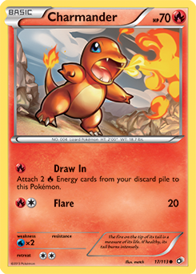

Some people exclusively try to collect rare or special cards while others are looking for certain types of Pokémon or want to catch them all. Being more specific with your list can help narrow down your search among the 700+ Pokémon that currently exist. As you start out, keep in mind that there are different rarities for cards. 'Rarity' is a term used to determine how hard a card is to find and the rarity is marked on the bottom right of the card with a symbol.
The card shown above is a stage 2 evolution. The GX indicates that this is an especially powerful card. Not all GX cards are equally rare or equaly powerful and because of that they are not all equally valuable.